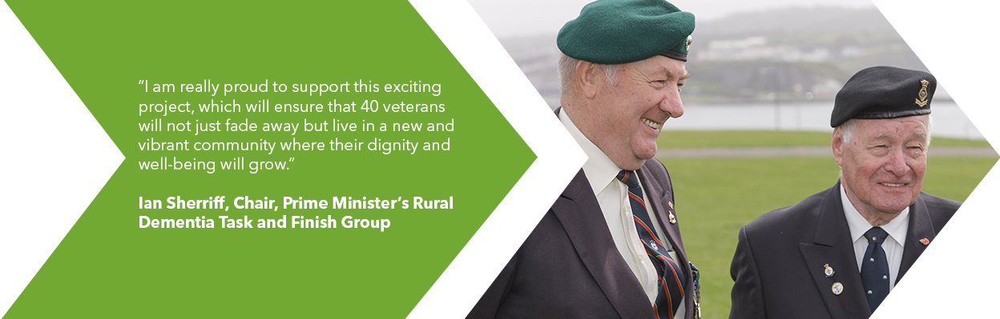
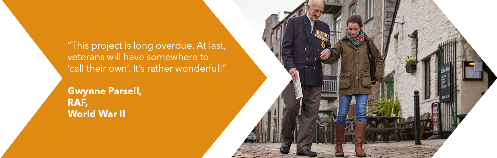
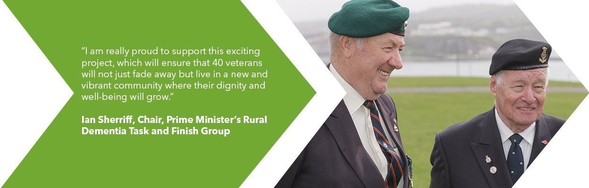
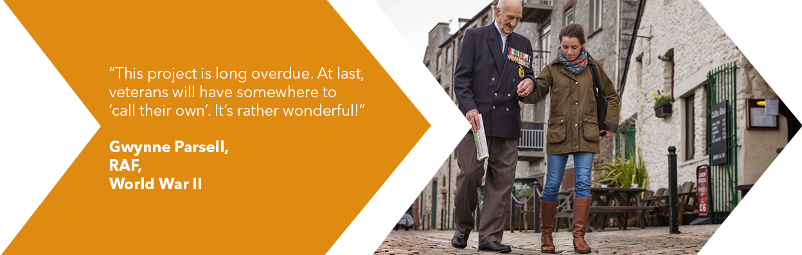

WHAT DIFFERENCE WILL IT MAKE?
The Equinox Centre will be far more than bricks and mortar. The first of its kind, this dedicated facility will set a new benchmark for how society recognises our veterans and provide an unparalleled level of care and social inclusion, as well as helping to ensure that the medical and healthcare profession students involved learn to see the whole person, not just any condition or illness.
 



WHY VETERANS?
Recent conflicts have rightly brought much national focusupon the serving wounded and injured, and their immediatepost conflict care, and rehabilitation. In contrast Equinox is about today’s and tomorrow’s elderly veterans, from across all of the Armed Services, providing a focal point that reflects and recognises the contribution and sacrifices that the proud garrison city of Plymouth, and the Region’s veterans, have made in the past.
WHY MEDICAL STUDENTS?
Plymouth University has a young and thriving Medical School with an excellent national reputation and a strong emphasis on community engagement. Equinox builds upon this and provides an ideal way in which our future doctors can gain a professional understanding of and empathy with the elderly. The lengthy nature of their 5 year course also enables a greater consistency of project membership.
WHY PLYMOUTH?
Historically one of the more depressed urban areas in the country, Plymouth City Centre is developing rapidly and creatively. Equinox will contribute to the enrichment of the city, which, due to its historic Armed Forces legacy, has higher than average proportion of veterans, many of whom are living alone.
WHY EVALUATE?
Equinox will need to carefully evaluate its success in a non-intrusive, sensitive manner. Covering factors such as cost benefits, interaction, perceptions, measurable changes, self-reported quality of life, and the extent to which healthcare needs of veterans are addressed, evaluation will demonstrate value for donated money, and is expected to lead the way towards emulation of the benefits of intergenerational schemes at a national level.
WHERE NEXT?
Assuming demonstrable success it is entirely feasible that Equinox and Places for People could choose to replicate this scheme nationally, in other university cities, and perhaps also with generic students and elderly civilian residents.
“The Project Equinox and University of Plymouth partnership, that brings together medical students as coresidents with our veterans in the Equinox Centre, will bring long-term benefits and a positive impact on all those it serves.”
Professor Judith Petts,
Vice-Chancellor,
Plymouth University
Plymouth veterans Dave McDonald (left) and Eric Greenleaf
Peninsula Medical School students